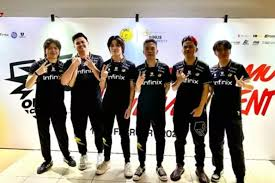

Apa Itu E-Sports? Ketahui Arti, Sejarah, dan Peluang Kariernya
E-Sport adalah kompetisi video game yang diadakan dalam tingkat profesional dan secara kompetitif. Yuk. ketahui arti lengkapnya di sini!
E-sport adalah sebuah bidang olahraga yang menggunakan video game sebagai ajang kompetisi. Beberapa dari kamu mungkin sudah tidak asing dengan cabang olahraga yang cukup populer ini.
Perkembangan teknologi dan minat kawula muda terhadap video game, membuat kompetisi ini lebih dari sekedar permainan. Kini, e-sports berkembang menjadi industri besar dengan berbagai peluang karier yang menjanjikan.
Di artikel ini akan membahas berbagai hal tentang olahraga e-sport, termasuk arti, sejarah, hingga jenis dan peluang kariernya. Yuk, simak sampai habis artikelnya!
Apa itu E-Sport

Menurut laman Britannica, e-sport adalah kompetisi game online yang diikuti oleh gamer pemula dan profesional secara individu maupun tim melalui liga terorganisir, sering kali dengan uang sebagai hadiahnya.
Permainan kompetitif ini menjadi dikenal sekitar puncak abad ke-21 dan dengan cepat berkembang menjadi permainan terorganisir, mirip dengan liga olahraga tradisional.
Tak hanya di Indonesia, olahraga yang satu ini terkenal hingga ke mancanegara, salah satunya adalah Korea Selatan.
Di sana, e-sport sudah menjadi ajang kompetisi persis seperti sepak bola dan bisbol yang banyak diminati mahasiswa dan berbagai anak muda.
Sejarah E-Sports

Jika melihat dari segi sejarahnya, perkembangan e-sport dimulai pada tahun 1972, tepatnya ketika Stanford University mengadakan sebuah turnamen kompetisi bermana Spacewar, yang dianggap sebagai kompetisi video game pertama di dunia.
Dulunya, peserta akan bersaing untuk memenangkan hadiah berupa langganan majalah Rolling Stone selama satu tahun.
Di tahun 2000-an, e-sport semakin populer seiring dengan berkembangnya permainan seperti StarCraft di Korea Selatan. Di tahun yang sama, World Cyber Games (WCG) pertama diadakan.
Dua tahun selanjutnya, atau tepatnya pada tahun 2002, Major League Gaming (MLG) didirikan di Amerika Serikat dan mulai memperkenalkan e-sport ke audiens yang lebih luas.
Puncaknya di tahun 2020-an, e-sport mulai perkembang dengan pesat dan menjadi bagian dari budaya global.
Bahkan, e-sport juga diakui sebagai cabang olahraga resmi di berbagai negara dan masuk dalam ajang olahraga besar, seperti Asian Games.
Kamu bisa dengan mudah menjumpainya di berbagai platform streaming online, seperti Twitch dan Youtube
Manfaat E-Sports
Dilansir melalui laman University School of Milwaukee, e-sport memiliki manfaat yang sangat beragam, diantaranya adalah:
-
Membangun Komunitas

E-sport bisa membuka peluang bagi berbagai kalangan, terutama bagi mereka yang kurang tertarik pada olahraga tradisional, seperti bola, tetapi ingin mempelajari keterampilan baru.
Selain itu, karena tersebar di penjuru dunia dan tersedia secara daring, e-sport juga memungkinkan berbagai kalangan berinteraksi dan membangun komunitas positif, dengan cara bermain bersama baik secara virtual maupun di arena e-sport.
-
Membina Keterampilan Sosial Emosional
Terlepas dari keahlian seseorang dalam bermain game, pemain e-sport juga bisa mendapatkan keterampilan belajar sosial dan emosional mereka, terutama ketika membentuk tim, mengembangkan bimbingan, berkolaborasi, hingga bersaing.
-
Menghubungkan Siswa dengan Pendidikan STEM
Siapa sangka jika dengan berlatih e-sport, siswa bisa semakin mahir dalam STEM (Sains, Teknologi, Teknik, dan Matematika).
Keterampilan ini bisa mereka dapatkan dari menganalisis data dan statistik, mininjau strategi, hingga menggunakan perangkat keras dan perangkat lunak komputer.
-
Mendapatkan Banyak Relasi
E-sports mendorong siswa untuk membangun komunitas dan relasi positif dengan teman-teman mereka. Bahkan, olahraga ini juga mendorong anak yang introvert untuk bisa bersosialisasi dengan teman-temannya.
Dampak Negatif E-Sport

Meskipun memiliki banyak manfaat, e-sport bisa berdampak negatif terhadap perkembangan pemainanya jika tidak diimbangi dengan kegiatan positif lain.
-
Menurunkan Nilai Akademik
Pemain e-sport kebanyakan berasal dari kalangan siswa dan pelajar yang masih membutuhkan kegiatan belajar yang intensif.
Jika waktu belajar mereka gunakan untuk bermain e-sport, otomatis hal ini akan menurunkan prestasi dan nilai akademik mereka.
-
Menurunkan Minat Membaca
Selain minat belajar yang menurun, e-sport juga dapat menurunkan minat baca dalam diri mereka. Hal ini disebabkan oleh kecanduan yang berlebihan terhadap game tersebut.
-
Suka Berkata Kasar
Kamu pasti sering menjumpai anak-anak yang bermain game sambil berkata kasar, bukan? Nah, itu termasuk salah satu dampak negatif dari e-sport.
Hal ini sering terjadi ketika pemain merasa frustasi karena gagal mendapatkan poin atau kalah dalam pertandingan.
Jika tidak dikontrol, kebiasaan ini bisa berdampak pada emosi dan cara berkomunikasi mereka dalam kehidupan sehari-hari.
-
Menjadi Boros
Kini, ada banyak game e-sport yang menawarkan skin dan item eksklusif yang tidak bisa didapatkan secara grati
Untuk memilikinya, pemain harus membeli menggunakan voucher game, yang harganya bisa cukup mahal. Jika tidak dikontrol, kebiasaan ini bisa membuat anak menjadi semakin boros.
-
Berbohong Kepada Orang Tua
Karena keinginan yang besar untuk membeli skin dan item tadi, anak yang belum memiliki penghasilan biasanya akan meminta uang kepada orang tua mereka dengan cara berbohong.
Hal ini tentu bisa menimbulkan dampak negatif yang lebih besar jika dilakukan secara terus menerus.
Jenis Game E-Sport

Pada dasarnya, e-sport terdiri atas berbagai jenis game dan permainan yang bisa kamu pilih sesuai dengan minat dan keinginan kamu sendiri, seperti beberapa
e-sport di bawah ini:
-
First Person Shooter:
Jenis game di mana pemain menembak dari sudut pandang orang pertama, seolah-olah melihat langsung melalui mata karakter. Beberapa game FPS yang populer termasuk Call of Duty, Doom, Half-Life 2, Superhot, dan Titanfall 2.
-
Fighting (Bertarung): Untuk memenangkan game ini, pemain harus bertarung satu sama lain. Contoh game bergenre fighting ini adalah adalah Street Fighter V: Arcade Edition, Tekken 7, Ultimate Super Smash Bros, Mortal Kombat 11, Dragon Ball Fighter Z, Soulcalibur VI.
-
Battle Royale: Game multipemain di mana pemain atau tim terakhir yang bertahan akan menang.
-
Card Battle: Jenis permainan kartu daring yang bisa dimainkan secara multiplayer maupun individu. Game ini mengandalkan strategi dalam menyusun dan menggunakan kartu untuk mengalahkan lawan.
-
MOBA (Multiplayer Online Battle Arena): Permainan daring yang melibatkan pertarungan antar tim di dalam arena.
Peluang Karier di Dunia E-Sport

Tak hanya menawarkan daya tarik di ajang kompetisi, e-sport juga memiliki peluang karier menarik bagi para pemainnya.
Berikut adalah beberapa peluang karier di dunia e-sport yang bisa menjadi referensi:
-
Pemain Profesional
Menjadi pemain profesional tentu termasuk dalam peluang karier menjanjikan bagi para penggemarnya.
Pemain profesional biasanya berkompetisi dalam sebuah turnamen dengan hadiah bernilai jutaan rupiah. Mereka juga bisa mendapatkan penghasilan tambahan dari sponsor dan streaming.
-
Streamer dan Konten Kreator
Saat ini, ada banyak streamer dan konten kreator yang mulai bermunculan di berbagai platform, seperti Twitch, Youtube, hingga Facebook Gaming, di mana mereka bisa mendapatkan penghasilan dari donasi penonton, iklan, dan sponsor.
-
Pelatih dan Analis
Seiring dengan berkembangnya e-sport, kebutuhan untuk pelatih dan analis akan semakin meningkat. Ini bisa jadi peluang karier yang menjanjikan juga, lho.
Sebagai pelatih, kamu akan bertanggung jawab untuk melatih tim, sementara analitis bertugas mempelajari permainan dan memberikan strategi untuk memenangkan pertandingan.
-
Manajemen Tim dan Event Organizer
Dunia e-sport tentu membutuhkan banyak tenaga kerja, seperti manajer tim dan penyelenggara acara. Mereka bertanggung jawab dalam mengelola jadwal, logistik, serta promosi acara.
-
Pengembangan Tim dan Penguji
Selain beberapa hal di atas, industri e-sport juga membutuhkan pengembangan game dan penguji untuk memastikan permainan berjalan lancar.
Jika kamu berasal dari ilmu komputer dan teknik informatika, peluang kerja di bidang ini akan cocok untuk dicoba.
|